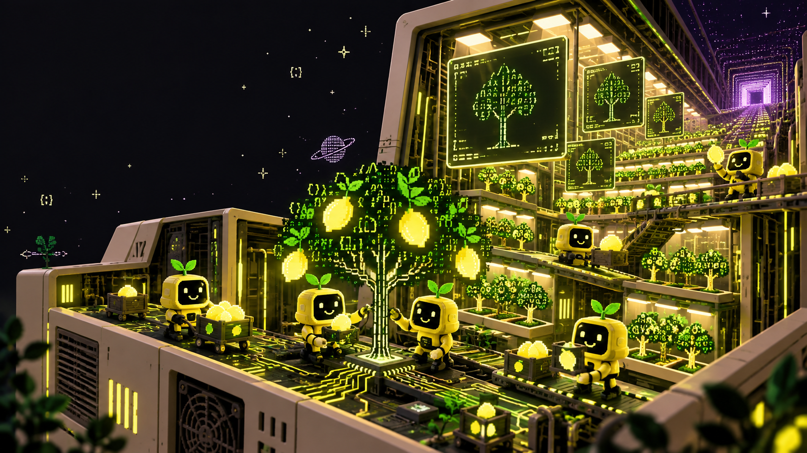
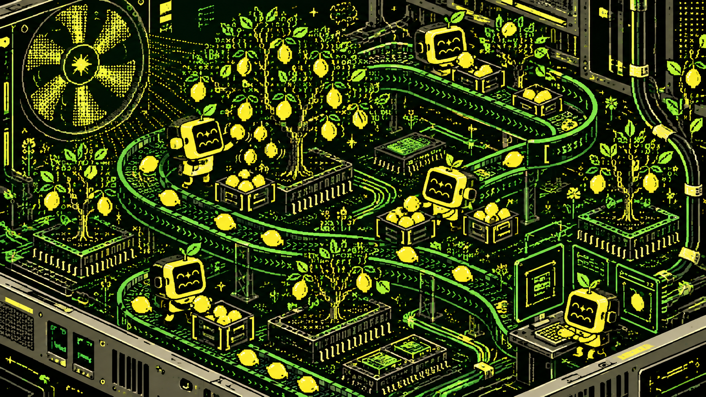
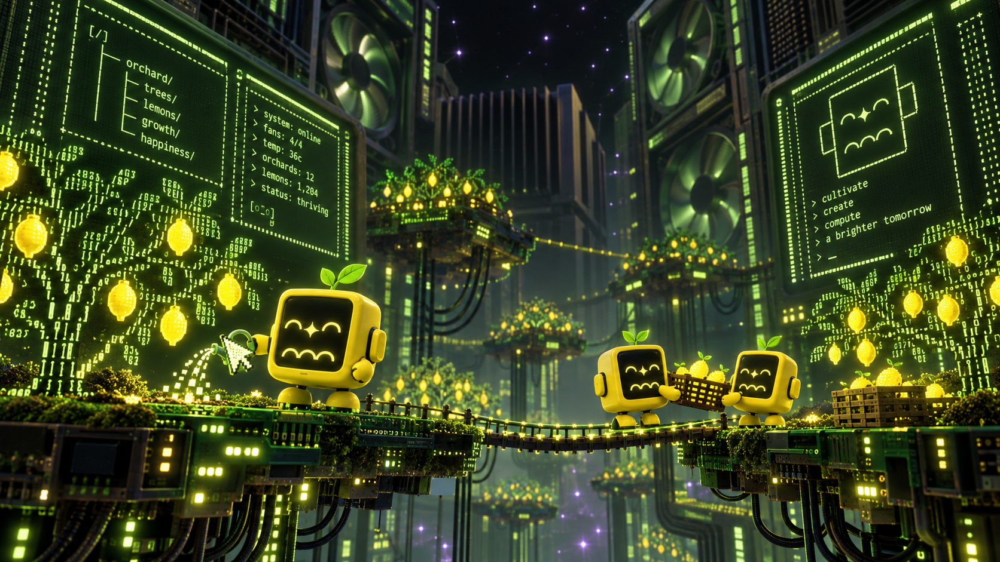
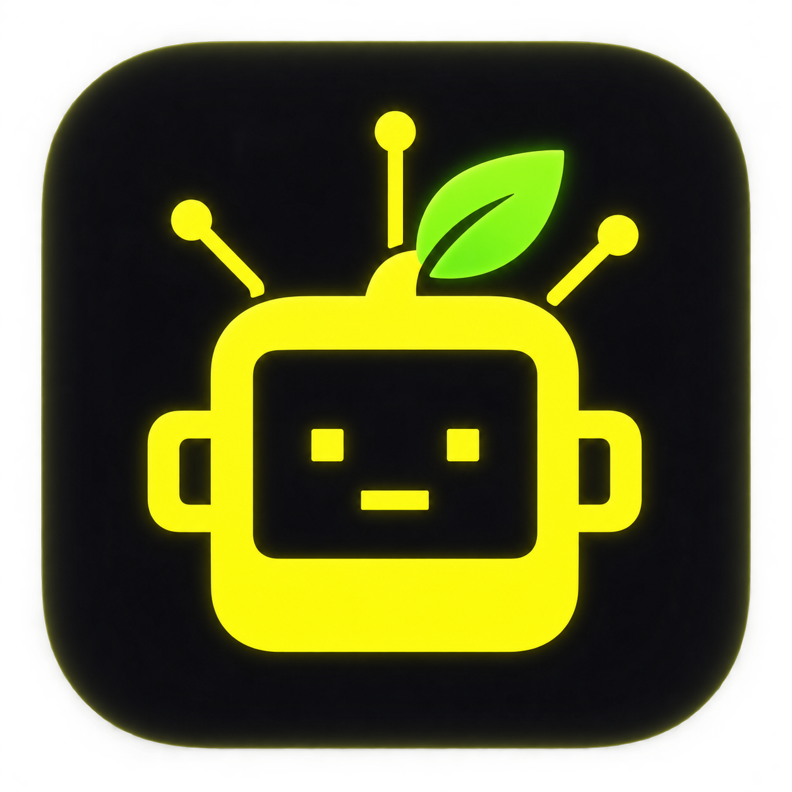

LEMON LAB / ART DIRECTION
The orchard
inside the machine.
A place where little Lemon Chans cultivate ideas together: part farm, part terminal, part fifth-dimensional computer. These are visual studies for Orchard’s world, not views of the app.



ICON STUDY / CANDIDATE
A tiny door to
the whole orchard.
A smiling yellow terminal, a leaf, and a little dark space around it. The small silhouette carries the orchard’s personality into Finder.

APP ICON / STUDY